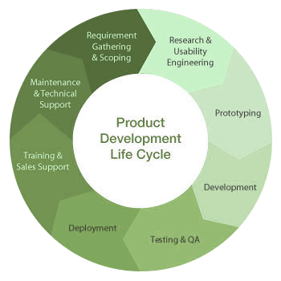

Pragmatic optimization
in modern programming
Ordering approaches
Created by Marina Kolpakova for UNN
Outline
- What is optimization?
- Towards pragmatic approach
- Place of optimization in a project live cycle
- Ordering optimizations
- Optimization steps overview
- which would be discussed in details during the course
What is optimization?
In computing, optimization is the process of modifying a system to make some aspect of it work more efficiently or use fewer resources.
In particular, this is a process of transforming a piece of code to make it more efficient without changing its output.
Metrics are commonly considered:
- Wall-clock time, or wall time
- is the human perception of the passage of time from the start to the completion of a task.
- Power consumption
- is the electrical energy over time which is supplied to complete task.
- CPU time, or processor time
- is the total execution time or runtime for which the CPU (or other computing device) was dedicated to a task (used for processing instructions of that task)
Pragmatic approach
“Programmers waste enormous amounts of time thinking about, or worrying about, the speed of non-critical parts of their programs, and these attempts at efficiency actually have a strong negative impact when debugging and maintenance are considered. We should forget about small efficiencies, say about 97% of the time; premature optimization is the root of all evil. Yet we should not pass up our opportunities in that critical 3%.“
-Donald Knuth, Structured Programming With go to Statements
Knowledge is required
- The code
- The problem, it solves
- The algorithm, it implements
- Complexity of the algorithm
- The compiler
- Compilation trajectory
- Compiler's optimization capabilities and obstacles
- The platform
- Architecture capabilities
- Instruction
Sset
Architecture
- Micro-architecture specifics
- Architecture capabilities
Project life cycle
Project optimization cycle

Top-Down (High-low) approach
Use appropriate algorithm
Optimize memory access patterns
Minimize the number of operations
Shrink the critical path
Perform hardware specific optimizations
Dive into assembly
From whence get performance?
- Algorithm
-
- decreasing big-O complexity,
- using optimized libraries for sub-routines,
- restructuring the code,
- parallelization.
- Memory access patterns & operations
-
- usage of optimizing compilers, auto-vectorization
- loop optimizations, vectorization.
- Shrinking critical path & performing HW specific optimizations
- fine-gained optimizations
Tread-offs
- Code portability decreases when we go deeper
- Performance portability decreases when we go deeper
- The cost of maintenance & extendability increases when we go deeper
- Optimizations are often not reusable
- Optimizations become obsolete very quickly
Understand the code
- Different people think differently
- you'll need time to get used to the code
- Understand dataflow
- input parameters
- output results
- data dependencies
- Identify performance limiters
- Time
- Profile
- Grub metrics
- eg power consumption
Use appropriate algorithm
Consider:
- Big O complexity

- Appropriate data structures
- Look for already optimized libraries
- Scalarization & parallelization opportunities
Use appropriate algorithm
You need to sort 100 Mb of numerical data...
What sorting algorithm would you choose?
Optimize memory access patterns
- You'll be surprised how many algorithms are memory bound
- It is crucial to load only data that is really needed for computations
Usually involves:
- Data restructuring
- to use only needed bytes
- Data packaging
- to shrink data in size
- Loop transformations
-
- to walk through data in more efficient way,
- to increase temporal & spacial locality,
- to perform cache-aware optimizations
Optimize memory access patterns
for (int j = 0; j < img.height; j++)
{
for (int i = 0; i < img.width; i++)
{
if (img.at<uint8_t>(j, i) > 0)
{
count++;
}
}
}
for (int i = 0; i < img.width; i++)
{
for (int j = 0; j < img.height; j++)
{
if (img.at<uint8_t>(j, i) > 0)
{
count++;
}
}
}
Which is more optimal for conventional CPU processor?
Minimize number of operations
Reducing in the number of program operations does not necessarily decrease its running time, but it is a good heuristic though.
A Compiler is good in local optimizations. So they usually helps a lot here:
- Machine-independent optimizations
- Eliminating common sub-expressions
- Constant propagation
- Redundancy elimination
- ..
- Machine-dependent optimizations
- Register allocation
- InstrucIon selecIon
- Instruction scheduling
- Peephole opImizaIon
- ..
But it also could fail one of this steps and harm the performance. To tell whether the compiler is actually automating a particular optimization, it is worth to look at the assembly code from this step.
Minimize number of operations
Shrink the critical path
Critical path is the longest sequence of operations in a code block which must be completed in order. It is caused by dependencies between operations.
Perform HW specific optimizations
Require comprehensive understanding of target HW, that are usually beyond of compiler abilities
Dive into assembly
Assembler is very often used to check the compiler
and rarely used to write low-level code.
Raw assembly make sense to:
- Overcome compiler bugs & optimization limitation
- additional instructions
- suboptimal register allocation
- Use specific hardware features
- which are not expressed in higher level ISA